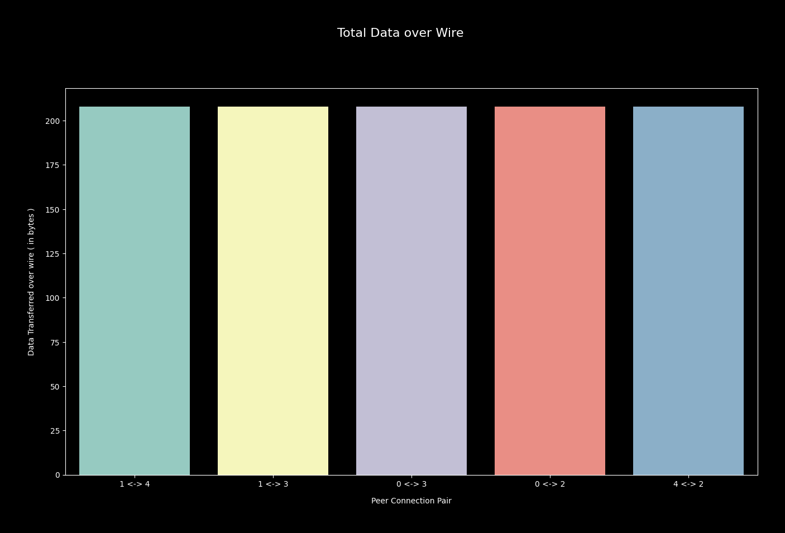

I asked, how does the world look like from p2p node's perspective ?
I decorated one experiment so that I can view world from a p2p node's perspective. First I'd like
to clarify what I mean by world view. A p2p network is a graph i.e. a mathematical structure
which I write as G = (V, E); useful when representing relationship between few entities. I represent
those entities as V i.e. vertex/ node set. Elements of V are connected via edges --- V x V ∈ E.
In p2p network set up, an entity is some process & connection between two of them is ( say ) TCP,
using which two processes carry out meaningful conversation. TCP being bidirectional, reliable, streaming
protocol, network is undirected graph though each data flow has direction associated. Each process ( read p2p node )
runs two I/O subprocesses for each peer it maintains a connection to --- one for reading messages
sent by peer, other one for sending messages to peer. One peer always knows it's neighbourhood i.e. which
nodes it's directly connected to, but may not see whole picture of network it's part of. A p2p network can
have N ( > 0 ) participants where each participant may know M-many others directly, where M < N. For gaining
a global view of network i.e. not only to whom node itself is connected to, but also how are other network participants
helping in structuring network topology, nodes need to follow certain protocol. The protocol requires participant to forward
messages to a subset of others it's directly connected, where messages are received from neighbours.
Message sending is no doubt costly, sending as less as possible is the goal.
How much data to be sent over wire while following protocol, is influenced by degree of nodes i.e. how many connections
each peer maintains with other nodes.
I design one protocol that each participant process follows, where synthetic network topology is imposed
on participants, for running simulation. Afterwards I analyse collected log for viewing world around
from each network participant's eyes, while inspecting price paid for constructing view i.e. in terms of bytes of data
carried over wire while following protocol.
Each network participant is identified uniquely & authors one uniquely identifiable message. It propagates that to all peers it's directly connected to. On reception of message from other peer, it first inspects message for absence of any of its directly connected peer's ids. If found any, forwards message to them, while appending unique self id in hop field, which will be again inspected in respective recepient node. If peer authored message is received again, it's not forwarded to any. Protocol ends in finite time due to two termination properties, though no time limit is provided, due to asynchronous nature of message passing.
I create one setup with 3 nodes, where each node follows aforementioned protocol. Each node maintains connections with other 2 peers i.e. satisfying criteria for forming both Cycle & Mesh topology.
In first step each peer propagates its authored message to others. I denote messages with Message i, where 0 <= i < N ( = 3 ). A received message can be of two kinds.
Peer keeps receiving messages from others; learns about who is connected to whom directly; helps others in learning same by appending unique self id to received message before forwarding. At end of each step, as marked in above flow diagram, peer has a better picture of network. I try to find out what messages each peer is keeping track of.
| Step | Peer 0 | Peer 1 | Peer 2 |
|---|---|---|---|
| 1 | {Message 0} | {Message 0} | {Message 0} |
| 2 | {Message 0} | {Message 0; Message 0,2} | {Message 0} |
| 3 | {Message 0} | {Message 0; Message 0,2} | {Message 0; Message 0,1} |
| 4 | {Message 0; Message 1} | {Message 0; Message 0,2; Message 1} | {Message 0; Message 0,1; Message 1} |
| 5 | {Message 0; Message 1; Message 1,2} | {Message 0; Message 0,2; Message 1} | {Message 0; Message 0,1; Message 1} |
| 6 | {Message 0; Message 1; Message 1,2} | {Message 0; Message 0,2; Message 1} | {Message 0; Message 0,1; Message 1; Message 1,0} |
| 7 | {Message 0; Message 1; Message 1,2; Message 2} | {Message 0; Message 0,2; Message 1; Message 2} | {Message 0; Message 0,1; Message 1; Message 1,0; Message 2} |
| 8 | {Message 0; Message 1; Message 1,2; Message 2; Message 2,1} | {Message 0; Message 0,2; Message 1; Message 2} | {Message 0; Message 0,1; Message 1; Message 1,0; Message 2} |
| 9 | {Message 0; Message 1; Message 1,2; Message 2; Message 2,1} | {Message 0; Message 0,2; Message 1; Message 2; Message 2,0} | {Message 0; Message 0,1; Message 1; Message 1,0; Message 2} |
At very beginning, each peer knows about its local neighbourhood i.e. peer 0 knows
it's directly connected to peer (1,2). But it has no idea whether peer 1 & peer 2
are also neighbours or not. For learning that peer 0, has to wait until in step 5 it
receives Message 1,2 from its neighbour peer 2. Following protocol it inspects
message & figures out this message is authored by peer 1 & has hopped to it via peer 2. Then it's
evident peer 1 & peer 2 are neighbours. But notice after that, peer 0 doesn't forward Message 1,2
to any of else, due to presence of both neighbouring peer ids in hop field of message.
While in step 6, peer 0 forwarded Message 1 to peer 2, as Message 1,0 because header
inspection found this message has not yet hopped via peer 2.
Similarly peer 1 learns peer 0 & peer 2 are neighbours in step 2, while peer 2 starts seeing full
picture in step 3. Picture becomes clearer when peer 0 receives Message 2,1 from peer 1 in step 8,
asserting its belief that indeed peer 1 & peer 2 are neighbours connected via undirected edge ( read bidirectional TCP connection ).
Now I spend some time in imposing synthetic network topology, for running simulation & collecting data. I start with a cycle, where I bring in 5 peers, each maintaining connection with 2 other peers.
Each peer runs protocol, while collecting two kind of logs. Visualising accumulated ( from all network participants ) traffic log helps in understanding what cost whole network incurs for following this protocol.
Data says, each of 5 edges, carried total 208 bytes of data. Representation is direction
agnostic, but I can clearly understand edge (1, 2), helped in carrying 104 bytes in 1 -> 2
direction & remaining in reverse. Same is true for other edges.
I choose to see how peer 0 is viewing world around it, by reconstructing network graph
from collected message log of peer 0.
As peer 0 is able to correctly construct network topology from messages it received, now I like to inspect how peer 0 helped its neighbour peer 1, in constructing its view of world.
It's evident as long as participants follow protocol by their heart, they'll themselves learn network
topology correctly, while helping others gaining same world view.
I impose mesh topology on peers & let them follow protocol for understanding cost requirement and
viewing world from their point of view. In mesh topology each peer maintains connection with other N-1
peers where network has N participants. So in total number of edges in network should be N * (N-1) / 2.
I take 5 nodes i.e. 10 edges across which data flows in either direction.
I notice each edge ( read TCP connection ) carries on average ~700 bytes of data, which is significantly
higher than circular network topology. This is solely because of presence of more edges in network than cycle
topology, so discovering them all requires flowing message through them, costing more data transfer.
With 10 edges, total cost incurred by network for following protocol is quite high.
But I wonder, does paying this much help in gaining correct view of network ? For finding so, I choose
to view world around from peer 4's eyes.
As peer 4 respected protocol, it gained full picture of network topology. Clicking on peer 4's edges shows amount of data transferred using that link.
| Peer | In ( bytes ) | Out ( bytes ) |
|---|---|---|
| Peer 0 | 326 | 326 |
| Peer 1 | 407 | 407 |
| Peer 2 | 434 | 434 |
| Peer 3 | 407 | 407 |
Total 3148 bytes of data peer 4 received & sent to its neighbours while following protocol.
But when I look at how much peer 4 had to spend, in case of circular network topology,
it's only 208 bytes.
Finally I decide to impose another topology, shaped like starfish. After orchestrating connection
between peers, I let them run protocol. Starfish topology is cycle network in disguise, just that
it's drawn in different way. I want to understand does changing peer connections little bit,
make any difference in node's perception of outer world.
Cost incurred by network, while following protocol, in starfish topology is similar to what I found in circular network topology. Each edge helps in transferring 208 bytes of data.
I reconstruct network from message log, for understanding how peer 3 views world around itself. And it's evident it's view is correct, while cost incurred is same as cycle network topology.
I note, cost can be reduced, because for simulation I decided to encode messages as JSON
which is text based serialisation technique, binary data serialiser should be preferred
choice in real-world scenario. Code used for designing, running simulation, collecting log &
visualising results, can be found here.
I ask,
I plan to dive deeper. I'll love to learn reader's thoughts. Have a great time !